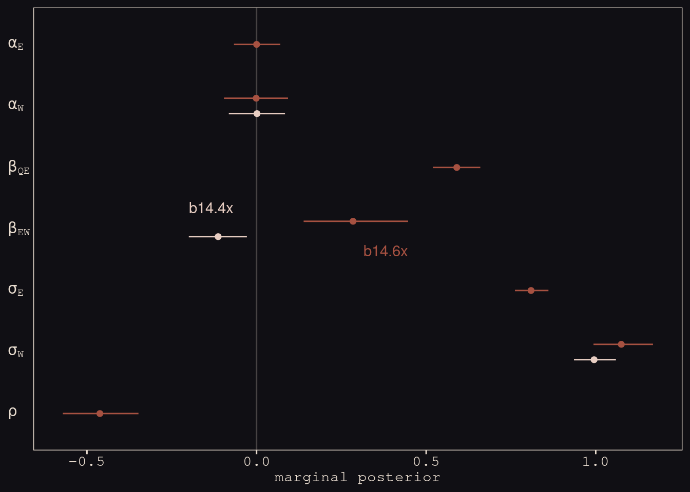

13.3 Instruments and causal designs
14.3.1. Instrumental variables
![This is a cool technqiue that goes beyond the backdoor crioterion. Sometimes it tells you you can't remove the confounding. But all is not lost - you can still deconfound. Imagine this classic case where we're interested in some E for education, and W for wages. Many people are interested in measuring the ffect of education on wages. Unviersity funding hinges on it. The problem is that there are a huge umber of confounds, labelled U. Could just be personality effects, like your laziness. There are going to be lots like this in any observational system. Can't condition on you because we don't have it measured.](slides/L18/11.png)
This is a cool technqiue that goes beyond the backdoor crioterion. Sometimes it tells you you can’t remove the confounding. But all is not lost - you can still deconfound. Imagine this classic case where we’re interested in some E for education, and W for wages. Many people are interested in measuring the ffect of education on wages. Unviersity funding hinges on it. The problem is that there are a huge umber of confounds, labelled U. Could just be personality effects, like your laziness. There are going to be lots like this in any observational system. Can’t condition on you because we don’t have it measured.
![But if you can get an instrument Q, there's some hope. It's a variable that affects the exposure of interest, but not the outcome. Here it's birthday position in year. Q for quarter. Famous exampel form the economics literature. Pepople born earlier consume less eudcation. Why? First, age is a social variable. The age you're assigned is randomly cut off in January. So you can be biolgically almost a year older than someone the same social age. And it's your social age that determines when you start school. So earlier in the year are older when they start school, and graduate having completed less school. You're also eligible to quit school earlier. So you will have consumed less school if you drop out at the same time as someone younger. This is a natural experiment, assigned by the hand of god, interacts with the social system. Adjusts your education independent of the confounds, which are probably not associated with January - people born in January probably aren't lazier, but we need to check this.](slides/L18/12.png)
But if you can get an instrument Q, there’s some hope. It’s a variable that affects the exposure of interest, but not the outcome. Here it’s birthday position in year. Q for quarter. Famous exampel form the economics literature. Pepople born earlier consume less eudcation. Why? First, age is a social variable. The age you’re assigned is randomly cut off in January. So you can be biolgically almost a year older than someone the same social age. And it’s your social age that determines when you start school. So earlier in the year are older when they start school, and graduate having completed less school. You’re also eligible to quit school earlier. So you will have consumed less school if you drop out at the same time as someone younger. This is a natural experiment, assigned by the hand of god, interacts with the social system. Adjusts your education independent of the confounds, which are probably not associated with January - people born in January probably aren’t lazier, but we need to check this.
![Why does this help? It turns E into a collider. If we condition on E, which we're going ot do, and we know Q, we get information about U. Like the light switch - if the ligth is on, and the conditions for that are that the switch is on and there needs to be electricity, conditioning on E is like saying I know the light is on. Conditioning on Q is like saying I know the switch is thrown. Now you know U, that electricyt is there. So what's happening here? Next slide. Let's talk about correlation first. Q tells us something about the strength of the corrleation U.](slides/L18/13.png)
Why does this help? It turns E into a collider. If we condition on E, which we’re going ot do, and we know Q, we get information about U. Like the light switch - if the ligth is on, and the conditions for that are that the switch is on and there needs to be electricity, conditioning on E is like saying I know the light is on. Conditioning on Q is like saying I know the switch is thrown. Now you know U, that electricyt is there. So what’s happening here? Next slide. Let’s talk about correlation first. Q tells us something about the strength of the corrleation U.
Imagine on average Q1 people consume 10 years more. Then we look a ta parituclar Q1 person who consumed more than the average. We just learned seomething about the confound. That they’re not more lazy. We find out about them when we find out about their education, because we now something about Q.
![Often these are called natural experiments in biology. If we fould experimentally maniputlate education, we woudl do that, but can't. We'd satisfy the backdoor criterion. Not ethical to do that. The birthday is random, so now it's liek a weak experiemnt, where we've partially closed the backdoor. Like an experiemnt that doesn't always take. Q is suggesting to indiviuals they should do more or less education. The tendencies to follow the experiemnt give you information about the confound. If you follow up on the litereature, many experiements are actually like this, because we only suggest treatments to poeple. Epidemiologicla experiments are like this, becuase you only suggest treatment - they walk out the door and some take it and some don't. This is called *intent to treat*, and you have to estimate it. Really famous case with anti-retroviral trials. People taking them knew there was a control arm, so they blended up their medications. Turns out this isn't rare. This instrumental variable analysis is the correct way to anlysis an epxeriemtbn where the treatment is not enforced, but only suggested. Happens in psychology. Did they really look at the stimulus?](slides/L18/15.png)
Often these are called natural experiments in biology. If we fould experimentally maniputlate education, we woudl do that, but can’t. We’d satisfy the backdoor criterion. Not ethical to do that. The birthday is random, so now it’s liek a weak experiemnt, where we’ve partially closed the backdoor. Like an experiemnt that doesn’t always take. Q is suggesting to indiviuals they should do more or less education. The tendencies to follow the experiemnt give you information about the confound. If you follow up on the litereature, many experiements are actually like this, because we only suggest treatments to poeple. Epidemiologicla experiments are like this, becuase you only suggest treatment - they walk out the door and some take it and some don’t. This is called intent to treat, and you have to estimate it. Really famous case with anti-retroviral trials. People taking them knew there was a control arm, so they blended up their medications. Turns out this isn’t rare. This instrumental variable analysis is the correct way to anlysis an epxeriemtbn where the treatment is not enforced, but only suggested. Happens in psychology. Did they really look at the stimulus?
Generatively, what to do. Take the DAG and simulate from it. There’s a model for wages as a function of education and the confound.
Then education is there.
Then quarter of birth. Not true, but for the sake of the example.
Making the effect of E 0.
# make a standardizing function
standardize <- function(x) {
(x - mean(x)) / sd(x)
}
# simulate
set.seed(73)
n <- 500
dat_sim <-
tibble(u_sim = rnorm(n, mean = 0, sd = 1),
q_sim = sample(1:4, size = n, replace = T)) %>%
mutate(e_sim = rnorm(n, mean = u_sim + q_sim, sd = 1)) %>%
mutate(w_sim = rnorm(n, mean = u_sim + 0 * e_sim, sd = 1)) %>%
mutate(w = standardize(w_sim),
e = standardize(e_sim),
q = standardize(q_sim))
dat_sim## # A tibble: 500 × 7
## u_sim q_sim e_sim w_sim w e q
## <dbl> <int> <dbl> <dbl> <dbl> <dbl> <dbl>
## 1 -0.145 1 1.51 0.216 0.173 -0.575 -1.36
## 2 0.291 1 0.664 0.846 0.584 -1.09 -1.36
## 3 0.0938 3 2.44 -0.664 -0.402 -0.0185 0.428
## 4 -0.127 3 4.09 -0.725 -0.442 0.978 0.428
## 5 -0.847 4 2.62 -1.24 -0.780 0.0939 1.32
## 6 0.141 4 3.54 -0.0700 -0.0146 0.651 1.32
## 7 1.54 2 3.65 1.88 1.26 0.714 -0.464
## 8 2.74 3 4.91 2.52 1.67 1.48 0.428
## 9 1.55 3 4.18 0.624 0.439 1.04 0.428
## 10 0.462 1 0.360 0.390 0.286 -1.27 -1.36
## # … with 490 more rowsRn the naive regression. Strong and reliable effect. Purely the confound. Can’t interpret these things.
b14.4 <-
brm(data = dat_sim,
family = gaussian,
w ~ 1 + e,
prior = c(prior(normal(0, 0.2), class = Intercept),
prior(normal(0, 0.5), class = b),
prior(exponential(1), class = sigma)),
iter = 2000, warmup = 1000, chains = 4, cores = 4,
seed = 14,
file = "fits/b14.04")
print(b14.4)## Family: gaussian
## Links: mu = identity; sigma = identity
## Formula: w ~ 1 + e
## Data: dat_sim (Number of observations: 500)
## Samples: 4 chains, each with iter = 2000; warmup = 1000; thin = 1;
## total post-warmup samples = 4000
##
## Population-Level Effects:
## Estimate Est.Error l-95% CI u-95% CI Rhat Bulk_ESS Tail_ESS
## Intercept -0.00 0.04 -0.08 0.08 1.00 4195 2893
## e 0.40 0.04 0.32 0.48 1.00 3606 2780
##
## Family Specific Parameters:
## Estimate Est.Error l-95% CI u-95% CI Rhat Bulk_ESS Tail_ESS
## sigma 0.92 0.03 0.86 0.98 1.00 4362 3150
##
## Samples were drawn using sampling(NUTS). For each parameter, Bulk_ESS
## and Tail_ESS are effective sample size measures, and Rhat is the potential
## scale reduction factor on split chains (at convergence, Rhat = 1).Now add the instrument. And you could estimate all the \(U\)s as parameters, one for each of the 500 individuals in the sample. But the way better way to do that, is to use the MVNOrmal as your outcome distribution. So now as the likelihood, the top part of the model, we’re going to say that \(W\) and \(E\) are drawn from a common distribtuion with some correlation. Where does the correlation come from? From the confound.
First path we’ll worry about is the instrument to education. Expected amount of education is some intercept then slope for quartr of birth.
Siomuiltaenosuly we’ll runt he other model of effect of education on wages.
Then at the top we deal with the confound. Generates correlated devaitions after we’d conditioned on other things. This is the same gerative model, but we’ve marginalised over all the \(U\) values, by making a correlation matrix.
SO now we have this at the top of the mdoel.
Now see what happens when we also condition directly on \(Q\), as in \(Q \rightarrow W \leftarrow E\).
b14.5 <-
brm(data = dat_sim,
family = gaussian,
w ~ 1 + e + q,
prior = c(prior(normal(0, 0.2), class = Intercept),
prior(normal(0, 0.5), class = b),
prior(exponential(1), class = sigma)),
iter = 2000, warmup = 1000, chains = 4, cores = 4,
seed = 14,
file = "fits/b14.05")print(b14.5)## Family: gaussian
## Links: mu = identity; sigma = identity
## Formula: w ~ 1 + e + q
## Data: dat_sim (Number of observations: 500)
## Samples: 4 chains, each with iter = 2000; warmup = 1000; thin = 1;
## total post-warmup samples = 4000
##
## Population-Level Effects:
## Estimate Est.Error l-95% CI u-95% CI Rhat Bulk_ESS Tail_ESS
## Intercept -0.00 0.04 -0.07 0.07 1.00 3712 2956
## e 0.63 0.05 0.54 0.73 1.00 3489 3290
## q -0.40 0.05 -0.50 -0.31 1.00 3404 3029
##
## Family Specific Parameters:
## Estimate Est.Error l-95% CI u-95% CI Rhat Bulk_ESS Tail_ESS
## sigma 0.86 0.03 0.81 0.91 1.00 3585 3149
##
## Samples were drawn using sampling(NUTS). For each parameter, Bulk_ESS
## and Tail_ESS are effective sample size measures, and Rhat is the potential
## scale reduction factor on split chains (at convergence, Rhat = 1).Holy smokes that’s a mess. This model suggests both \(E\) and \(Q\) have moderate to strong effects on \(W\), even though we know neither do based on the true data-generating model.
The statistical solution is as follows:
e_model <- bf(e ~ 1 + q)
w_model <- bf(w ~ 1 + e)
b14.6 <-
brm(data = dat_sim,
family = gaussian,
e_model + w_model + set_rescor(TRUE),
prior = c(# E model
prior(normal(0, 0.2), class = Intercept, resp = e),
prior(normal(0, 0.5), class = b, resp = e),
prior(exponential(1), class = sigma, resp = e),
# W model
prior(normal(0, 0.2), class = Intercept, resp = w),
prior(normal(0, 0.5), class = b, resp = w),
prior(exponential(1), class = sigma, resp = w),
# rho
prior(lkj(2), class = rescor)),
iter = 2000, warmup = 1000, chains = 4, cores = 4,
seed = 14,
file = "fits/b14.06")print(b14.6)## Family: MV(gaussian, gaussian)
## Links: mu = identity; sigma = identity
## mu = identity; sigma = identity
## Formula: e ~ 1 + q
## w ~ 1 + e
## Data: dat_sim (Number of observations: 500)
## Samples: 4 chains, each with iter = 2000; warmup = 1000; thin = 1;
## total post-warmup samples = 4000
##
## Population-Level Effects:
## Estimate Est.Error l-95% CI u-95% CI Rhat Bulk_ESS Tail_ESS
## e_Intercept -0.00 0.04 -0.07 0.07 1.00 2866 2597
## w_Intercept -0.00 0.04 -0.09 0.09 1.00 2895 2703
## e_q 0.59 0.04 0.52 0.66 1.00 2809 2527
## w_e -0.05 0.08 -0.21 0.09 1.00 1969 2492
##
## Family Specific Parameters:
## Estimate Est.Error l-95% CI u-95% CI Rhat Bulk_ESS Tail_ESS
## sigma_e 0.81 0.03 0.76 0.86 1.00 3419 2895
## sigma_w 1.02 0.05 0.94 1.12 1.00 2055 2223
##
## Residual Correlations:
## Estimate Est.Error l-95% CI u-95% CI Rhat Bulk_ESS Tail_ESS
## rescor(e,w) 0.54 0.05 0.44 0.64 1.00 1983 2373
##
## Samples were drawn using sampling(NUTS). For each parameter, Bulk_ESS
## and Tail_ESS are effective sample size measures, and Rhat is the potential
## scale reduction factor on split chains (at convergence, Rhat = 1).Now the parameter for \(E \rightarrow W\), w_e, is just where it should be – near zero. The residual correlation between \(E\) and \(Q\) is positive and large in magnitude, indicating their common influence from the unmeasured variable \(U\).
This works. First thing to look at are the regression effects. No confound there. Now look at our unconfounded education. Notice that Rho[1,2] is the correlation between education and wages, after having conditioned on the instrument - so it’s the effect of the confound. Positive correlations, which give you clues about what it could be.
Now adjust the simulation and try a scenario in which education has a positive influence but the confound hides it:
set.seed(73)
n <- 500
dat_sim <-
tibble(u_sim = rnorm(n, mean = 0, sd = 1),
q_sim = sample(1:4, size = n, replace = T)) %>%
mutate(e_sim = rnorm(n, mean = u_sim + q_sim, sd = 1)) %>%
mutate(w_sim = rnorm(n, mean = -u_sim + 0.2 * e_sim, sd = 1)) %>%
mutate(w = standardize(w_sim),
e = standardize(e_sim),
q = standardize(q_sim))
dat_sim## # A tibble: 500 × 7
## u_sim q_sim e_sim w_sim w e q
## <dbl> <int> <dbl> <dbl> <dbl> <dbl> <dbl>
## 1 -0.145 1 1.51 0.809 0.248 -0.575 -1.36
## 2 0.291 1 0.664 0.396 -0.0563 -1.09 -1.36
## 3 0.0938 3 2.44 -0.364 -0.615 -0.0185 0.428
## 4 -0.127 3 4.09 0.347 -0.0922 0.978 0.428
## 5 -0.847 4 2.62 0.976 0.370 0.0939 1.32
## 6 0.141 4 3.54 0.357 -0.0852 0.651 1.32
## 7 1.54 2 3.65 -0.466 -0.690 0.714 -0.464
## 8 2.74 3 4.91 -1.98 -1.80 1.48 0.428
## 9 1.55 3 4.18 -1.64 -1.55 1.04 0.428
## 10 0.462 1 0.360 -0.461 -0.686 -1.27 -1.36
## # … with 490 more rowsUpdate the models:
b14.4x <-
update(b14.4,
newdata = dat_sim,
iter = 2000, warmup = 1000, chains = 4, cores = 4,
seed = 14,
file = "fits/b14.04x")
b14.6x <-
update(b14.6,
newdata = dat_sim,
iter = 2000, warmup = 1000, chains = 4, cores = 4,
seed = 14,
file = "fits/b14.06x")Examine the effects with a coefficient plot
text <-
tibble(Estimate = c(fixef(b14.4x)[2, 3], fixef(b14.6x)[4, 4]),
y = c(4.35, 3.65),
hjust = c(0, 1),
fit = c("b14.4x", "b14.6x"))
bind_rows(
# b_14.4x
posterior_summary(b14.4x)[1:3, ] %>%
data.frame() %>%
mutate(param = c("alpha[W]", "beta[EW]", "sigma[W]"),
fit = "b14.4x"),
# b_14.6x
posterior_summary(b14.6x)[1:7, ] %>%
data.frame() %>%
mutate(param = c("alpha[E]", "alpha[W]", "beta[QE]", "beta[EW]", "sigma[E]", "sigma[W]", "rho"),
fit = "b14.6x")) %>%
mutate(param = factor(param,
levels = c("rho", "sigma[W]", "sigma[E]", "beta[EW]", "beta[QE]", "alpha[W]", "alpha[E]"))) %>%
ggplot(aes(x = param, y = Estimate, color = fit)) +
geom_hline(yintercept = 0, color = "#E8DCCF", alpha = 1/4) +
geom_pointrange(aes(ymin = Q2.5, ymax = Q97.5),
fatten = 2, position = position_dodge(width = 0.5)) +
geom_text(data = text,
aes(x = y, label = fit, hjust = hjust)) +
scale_color_manual(NULL, values = c("#E7CDC2", "#A65141")) +
scale_x_discrete(NULL, labels = ggplot2:::parse_safe) +
ylab("marginal posterior") +
coord_flip() +
theme(axis.text.y = element_text(hjust = 0),
axis.ticks.y = element_blank(),
legend.position = "none")
With the help from b14.6x, we found “that E and W have a negative correlation in their residual variance, because the confound positively influences one and negatively influences the other” (p. 459).
14.3.2. Other designs
Instruments are limited. THe hardest part is finding a plausible instrument. Cannot test whether something is a good instrument! DAG depends upon scientific information, not the data alone. Weak instruments may not be useful. Try some simulations from the chapters. Now we’ll introduce other things like the front door criterions.